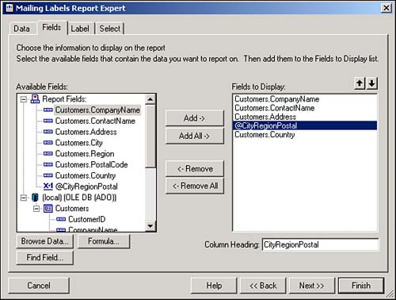
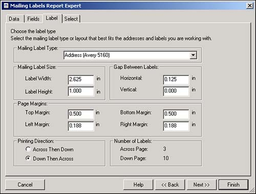
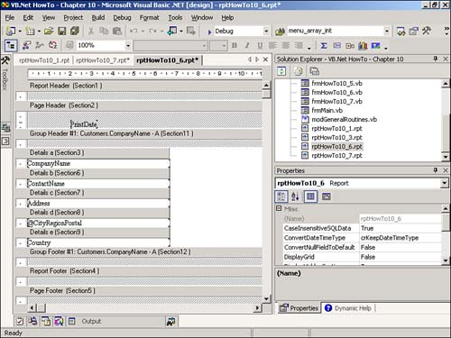
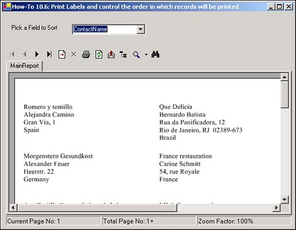

I need to be able to have my application print labels for my user's customer list. Sometimes my user needs to print labels based on the postal code, and other times he needs to print labels alphabetically by company name. How do I do this at runtime?
To accomplish this task, you will use the Report Expert to create mailing labels. You then will use code to update the sort order at run-time.
To create the mailing labels, you create a new report and choose Mailing Labels for the type of Expert to use. You then fill in the Data tab, which uses Customers for the table, and grab the following fields: CompanyName, ContactName, ContactTitle, Address, Formula (@CityRegionPostal= { Customers.City} & ", " & { Customers.Region} & " "& { Customers.PostalCode} ), and Country. You can see how this will look in Figure 10.22.

After clicking Next, you are taken to the tab that allows you to choose which type of label you want to use. For this How-To, the Address (Avery 5160) is used. Everything else on the page is chosen for you (see Figure 10.23).

Now you can just click Finish, and the final mailing label report is created (see Figure 10.24).

To control the sort order at runtime, you use properties, methods, and objects of the ReportDocument. Specifically, you traverse down the ReportDocument object model, looking at the Database object and moving down to the Fields level. You do this first when you're loading up a combo box with fields that are being used in the report. The following lines of code accomplish this:
For Each dfCurr In Me.rdHowTo10_6.Database.Tables.Item(0).Fields
Me.cboSortFields.Items.Add(dfCurr.Name)
Next
dfCurr is a FieldDefinition object, which means it is a field definition for a given field in the report.
The other object that will be used from the Report definition is the DataDefinition object, and the SortFields collection off of that. You can see this with the following lines of code, which set the sorting for the report based on which field they chose in the combo box:
With Me.rdHowTo10_6
dfSort = .Database.Tables.Item(0).Fields.Item(Me.cboSortFields.Text)
.DataDefinition.SortFields.Item(0).Field = dfSort
End With
Me.cvwCustomerLabels.RefreshReport()
You can see once again that the RefreshReport method is called after updating the SortFields item.
Open and run the Visual Basic .NET-Chapter 10 solution. Click on the button labeled How-To 10.6. You can select fields from the ComboBox control on the top of the form, and the report reflects the sorting selection (see Figure 10.25).
Create a new Crystal Report. Choose Mail Labels for the Report Expert to use.
Fill in the Data tab, choosing Northwind for the database, and Customers for the table to use.
Choose the fields as specified by the "Technique" section: CompanyName, ContactName, ContactTitle, Address, Formula (@CityRegionPostal= { Customers.City} & ", " & { Customers.Region} & " " & { Customers.PostalCode} ), and Country.
On the Label tab, choose Address (Avery 5160) for the mailing label type. Click Finish.
Create a Windows Form.
Drag on a ReportDocument object, and set it to point to the report you created in the past few steps. Then name your report document rdHowTo10_6.
Place the controls shown in Figure 10.22 onto the form with the properties set forth in Table 10.5.
|
Object |
Property |
Setting |
|---|---|---|
|
Label |
Text |
Pick a Field to Sort |
|
ComboBox |
Name |
cboSortFields |
|
CrystalReportViewer |
Name |
cvwCustomerLabels |
|
Anchor |
Top, Bottom, Right, Left |
|
|
ReportSource |
rdHowTo10_6 |
Add the code in Listing 10.5 to the Load event of the form. As described in the "Technique" section, this code iterates through each of the fields in the table that the report is based on and loads them into the Items collection of cboSortFields.
Private Sub frmHowTo10_6_Load(ByVal sender As System.Object, _
ByVal e As System.EventArgs) Handles MyBase.Load
Dim dfCurr As CrystalDecisions.CrystalReports.Engine.FieldDefinition
'- Iterate through the table that the report is based on
' and load the fields into a combo box.
For Each dfCurr In Me.rdHowTo10_6.Database.Tables.Item(0).Fields
Me.cboSortFields.Items.Add(dfCurr.Name)
Next
End Sub
Add the code in Listing 10.6 to the SelectedIndexChanged event of cboSortFields. This code takes the selected item from cboSortFields and locates it in the table that the report is based on. The DataDefinition object is retrieved and then assigned to the first items in the SortFields collection. Last, the report is redisplayed using the RefreshReport method.
Private Sub cboSortFields_SelectedIndexChanged(ByVal sender As System.Object, _
ByVal e As System.EventArgs) Handles cboSortFields.SelectedIndexChanged
Dim dfSort As CrystalDecisions.CrystalReports.Engine.FieldDefinition
'- Use the field that is picked in the combo box in
' the SortFields collection.
With Me.rdHowTo10_6
dfSort = .Database.Tables.Item(0).Fields.Item(Me.cboSortFields.Text)
.DataDefinition.SortFields.Item(0).Field = dfSort
End With
Me.cvwCustomerLabels.RefreshReport()
End Sub

If you have more than one field you want to sort on, then you could use the same technique, just adding code such as this:
dfSort = .Database.Tables.Item(0).Fields.Item(Me.cboSortFields2.Text) .DataDefinition.SortFields.Item(1).Field = dfSort
The 0 is replaced by 1, and you have another combo box from which you must pick the second sort field.